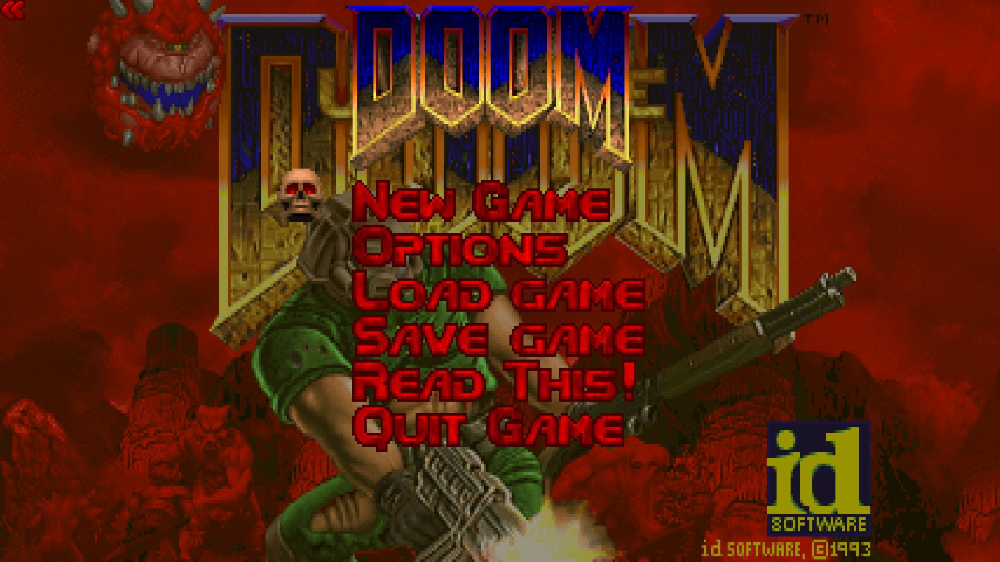
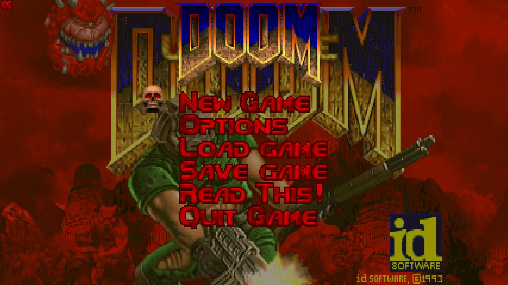

Doom (1993)
Game Details
Release Date: December 10, 1993
Platforms: MS-DOS, Windows, PlayStation, Xbox, and more.
Developer: id Software

Generally Favorable
Based on 255 ratings
Details
Summary
Doom (1993) is a groundbreaking first-person shooter that introduced millions to intense, action-packed gameplay. Developed by id Software, the game is set on Mars, where a military experiment has gone wrong, unleashing hordes of demons. Players take on the role of a Marine tasked with battling through these creatures and closing the portals to Hell. Known for its fast-paced combat, innovative level design, and immersive atmosphere, Doom became a cultural phenomenon and laid the foundation for modern FPS games. Its legacy is celebrated as a defining moment in gaming history.

Rated M for Mature
Platforms: PlayStation 3, Game Boy Advance, Xbox 360, PlayStation, PC, Nintendo Switch, Xbox One, PlayStation 4, iOS (iPhone/iPad)
Initial Release Date: September 27, 2006
Developer: Nerve Software
Publisher: Activision
Genres: FPS